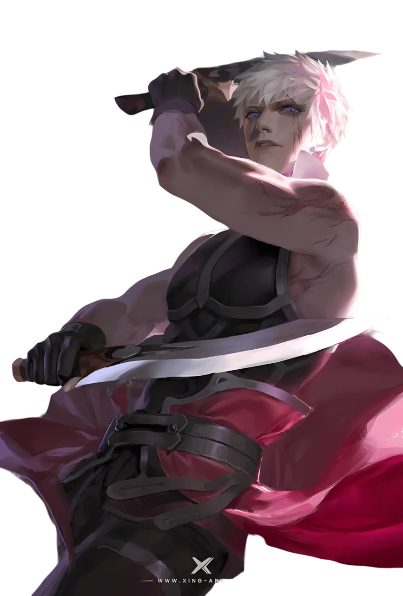
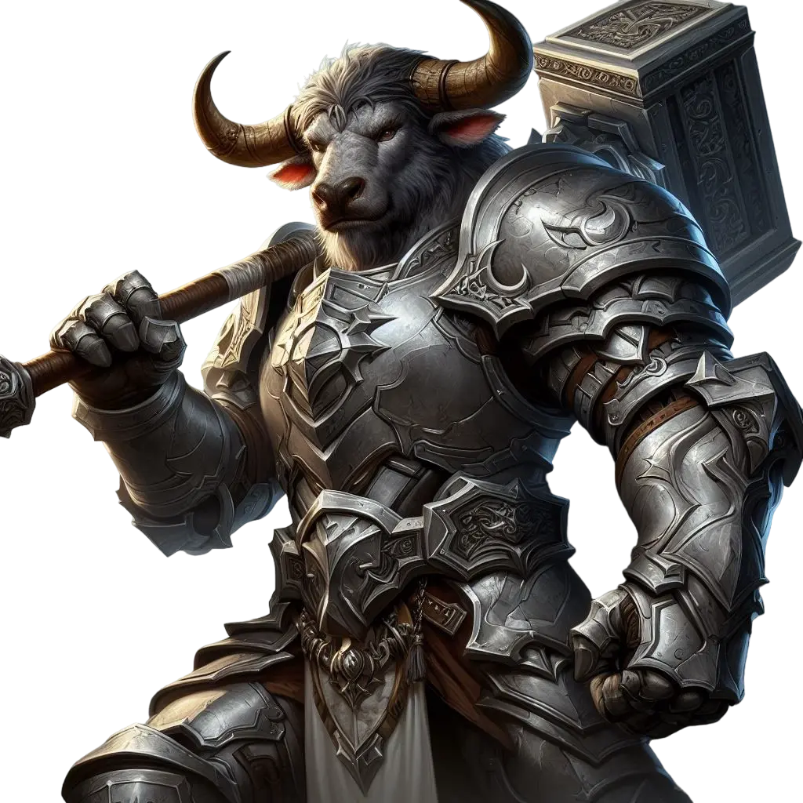
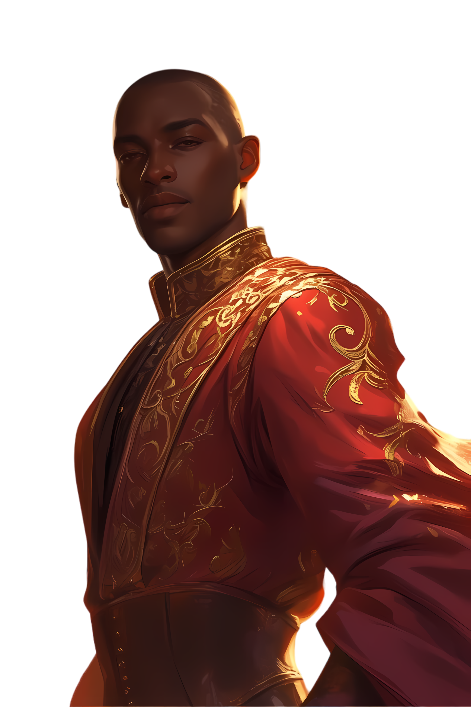
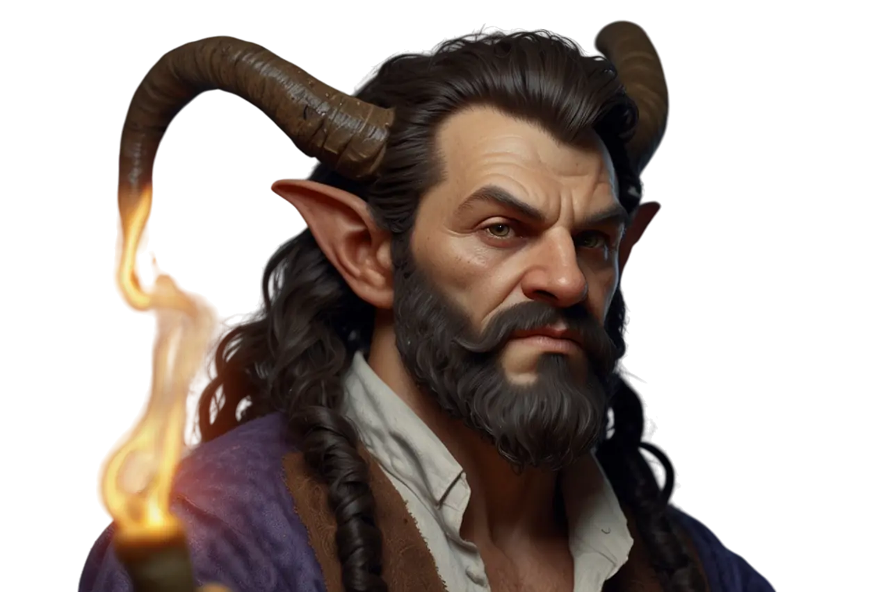

Coroa de Escamas
As Terras de Tylea precisam de heróis e a Oráculo apresentou-os como os salvadores das terras
O povo de Tylea permanesceu em paz com os Cinco Deuses estando entre eles, porém séculos de paz permitiram que até os cruéis titãs restabelecerem sua força e impor sua vontade sobre o povo das terras. Agora os heróis devem seguir pelas terras, encontrando seu caminho em meio a Grandes Trabalhos e Desafios até se provarem os verdadeiros salvadores das terras
Darius, o Condenado
Vindo de uma família notável, com sangue divino e dos próprios Lordes Dragões. Porém o azar sempre o perseguiu, seus pais morrendo muito cedo, todos o repudiam por seu passado
Agora ao menos a Oráculo o chamou, o que significa que seu destino possa ter mudado, devendo desafiar seu derradeiro fim
Kha'el, o Semideus
Um filho do deus da guerra Pythor, com temperamento lendário e uma carreira grandiosa entre as forças de Mytros, agora a Oráculo previu um grande destino, na qual se uniria ao seu pai em divindade.
Agora porém, seu destino jaz em resgatar sua mãe e matar o maior inimigo de seu pai, um poderoso Dragão conhecido como Hexia
Hermes, o Curioso
Vindo de uma família importante, sempre rodeados por conhecimento e livros do passado glorioso dos deuses. Porém o passado parece pouco para vislumbrar, então juntamente com os escolhidos da Oráculo, Tylea precisa de alguém que vislumbre o presente para formar o futuro das terras
Pinturas épicas das batalhas e vitórias dos heróis desbravadores são o seu objetivo, além de ficar na história como o escrivão do futuro
Sirius, o Desaparecido
Um dos originais Lordes Dragões, sangue divino correndo em suas veias, porém seus dias de glória já se foram e o conforto da Oráculo foi suficiente para mantê-lo inerte por séculos
Precisa ardentemente atender ao seu chamado cmoo Lorde Dragão e encontrar seus possíveis descendentes nas terras de Tylea
Theo, o Caçador de Dragões
Com o pai morto e sua loja destruída por um cruel dragão, agora seu destino faz nas mãos das Moiras, e nas suas próprias, agora seu passado trágico é uma base firme para um futuro glorioso

O sangue do dragão que matou seu próprio sangue ainda correrá por suas mãos, marcando sua história com a lendária vitória e reparação